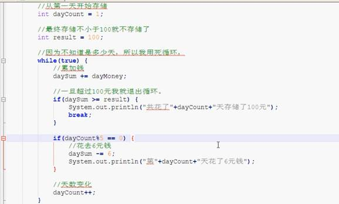
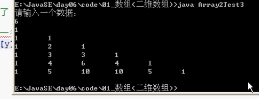
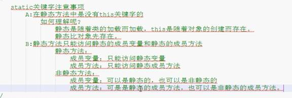

5.25以下的创建方法并不会报错。String数组................................................................ 16
8.8 代码块的知识点 静态代码块、构造代码块、构造方法.......................................... 25
8.15子类父类成员变量之间的关系................................................................................ 28
8.17子类初始化之前完成父类的无餐构造方法............................................................... 30
8.25 学生类老师类当中调用父类构造方法的问题.......................................................... 34
9.03 Final 有面试题。Final修饰局部变量...................................................................... 36
第一天 2017.2.28
1.Jdk 下载
http://www.oracle.com/technetwork/java/javase/downloads/jdk8-downloads-2133151.html
Java 的jdk 的环境配置
需要配置path 。这是第二种第一种就是吧bin路径添加到最前面（不推荐使用）
2017.3.2
java学习第二天
3.09 逻辑运算符
&逻辑与、 逻辑或|
、^异或、 ！ 非、&&、||
&有false 则false
| 有true则true
^ 逻辑异或 相同为false 不同为true
3.10
& 与&& 的区别
&& 左边是false 右边不执行；有false 则false 具有短路效果，false 之后右边的都不执行。
而& 不具有短路效果。
|| 同理双或 左边一旦有true 则有便也不执行，有true则true
3.11 位运算《《
20173.3 switch

4.15水仙花数
控制台输出回文数
For
while 循环的区别
For循环不是说每个条件都必须有，都不写条件也可以执行。
Break 跳出循环，跳出单层与双层。需要了解带标签的循环wc: nc:
小芳存钱问题：

5.16
java中的内存分配
2.24数组的逆序
两种方法，第二种方法主要是运用了for循环当中能够定义两个变量，用逗号隔开
5.25以下的创建方法并不会报错。String数组...
6.09杨辉三角

6.24 局部变量与成员变量

数组初始化：
Java中的static静态变量
http://www.cnblogs.com/dolphin0520/p/3799052.html
参考地址
可以用this访问
匿名对象可以作为形参使用，但是只是作为一次使用、使用完可以作为垃圾回收
7.22
Static关键字
Static 修饰的
Static 静态只能访问静态，而非静态可以访问一切

7.26Main
(String [] args) 的用处
2017.3.4 制作帮助文档开始
工具类需要注明为public 的类型的否则会提示报错
外界不能创建对象了
创建类的说明书：
8.8 代码块的知识点 静态代码块、构造代码块、构造方法
/*
代码块：在Java中，使用{}括起来的代码被称为代码块。
根据其位置和声明的不同，可以分为
局部代码块:局部位置,用于限定变量的生命周期。
构造代码块:在类中的成员位置,用{}括起来的代码。每次调用构造方法执行前，都会先执行构造代码块。
作用：可以把多个构造方法中的共同代码放到一起，对对象进行初始化。
静态代码块:在类中的成员位置,用{}括起来的代码,只不过它用static修饰了。
作用：一般是对类进行初始化。
面试题?
静态代码块,构造代码块,构造方法的执行顺序?
静态代码块 -- 构造代码块 -- 构造方法
静态代码块：只执行一次
构造代码块：每次调用构造方法都执行
*/
静态代码块的一道题：
8.10继承的注意事项
Java中只支持单继承不支持多继承，但是支持多层继承，就是son能继承father的，father能够继承grandFather，son能够调用grandFather中的方法
8.14子类父类之间值得调用问题
8.15子类父类成员变量之间的关系
8.16
This与super 子类父类成员调用
8.17子类初始化之前完成父类的无参构造方法

以下就是给出的子类显式调用父类的构造方法，以至于在父类没有无参构造方法当的时候动态调用自己构造无有参构造方法，（因为自身给出了带参构造方法，则系统不再给出无参构造方法），解决方法就是在子类的构造方法中去显式调用父类中自己定义的，目的不至于系统报错
一样也可以通过子类调用子类本身

8.21成员变量的初始化问题
一个类的初始化先走成员变量的初始化

8.22继承中成员方法的关系
8.23 方法重写 子类调用父类的相同的方法用super.xxxXxx();
8.24方法重载注意事项
比如父类 public 方法 子类中不能为private、 这样的
8.25 学生类老师类当中调用父类构造方法的问题
在子类中如果用到子类的带参构造方法去给父类成员变量赋值，上述用到super （name，age）
显式调用父类的带参构造方法
2017.3.3
Final 关键字使用开始（9.1）
9.1
final
Final 父类的方法不想让子类去重写 ，final 可以修饰变量，方法，类。三种。
被final修饰的方法不能被重写，会报错
Final 修饰的变量为常量
9.03
Final 有面试题。Final修饰局部变量
9.4
final 的初始化时机
Final int
num ； （不算赋值，自己赋值才算一次赋值）
9.05 抽象类
9.07 多态当中成员变量访问
9.10 继承的弊端的解决方案
利用强转类型。吧 Fu f=new Zi(); 当中的f强制类型转换为Zi z=（Zi）f; 省内存，前提是f得能够转成zi 也就是声明的时候是（ Fu f=new Zi() ）

9.11 孔子装爹的案例

9.13 多态中对象变化内存图
9.14 猫狗对象
左边大类型可以，小类型不行
9.17 抽象类
9.18
抽象类生命
9.19 抽象类的成员
9.24抽象类当中的小问题
9.26 接口
9.27 结构成员的特点
9.28 类与类、类与接口的、接口与接口 关系
9.29 抽象类与接口的区别
10.05 形式参数是类名、抽象类名
接口作为形参
作为返回值类型
10.10链式编程思想
10.12 包
10.15导包的注意事项：
10.16包的权限修饰符
10.19内部类与外部类
10.24匿名局部类